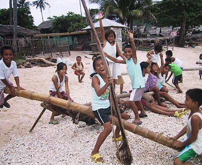
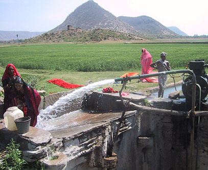
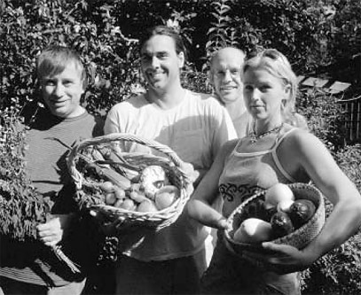

Environmental Tipping Points: A New Slant on Strategic Environmentalism
- Authors: Gerald Marten, Steve Brooks, and Amanda Suutari
- This article was published in World Watch Magazine, Vol.6, No.10 (November/December 2005) p.10-14
- Download English (PDF)
- Download Japanese (PDF)
- Download French (PDF)
- Spanish version
Step off the outrigger canoe and Apo Island greets you like a palm-shaded Shangri-La. It’s early afternoon, but the men have already come in from fishing. A dive shop and two small hotels overlook the shore, catering to tourists enticed by the pristine coral reefs. Thirty minutes from the coast of Negros, in the Philippines, the island supports an easygoing existence.
But Apo Island was a paradise almost lost. Twenty-five years ago, like countless communities around the world, islanders found their livelihood headed for collapse. Fishing had always been the foundation of the village economy, and the fish were disappearing.

Apo Island children: their future no no teetering?
Photo: Ann Marten
What saved their fishery and their way of life was that they found a positive environmental tipping point.
Day by day, we’re flooded with news of environmental devastation. We read that natural systems, from rainforests to ocean currents, are nearing “tipping points” of irreversible change. But around the globe, a positive kind of environmental tipping point is quietly emerging, one that tips towards sustainability instead of away from it. In places where top-down regulations and high-priced technical fixes aren’t working, these tipping points offer a third way to restore communities, both natural and human. Instead of trying to fix nature, or to change human nature, they’re tapping the inborn powers of both to heal themselves—and one another.
Malcolm Gladwell’s recent bestseller The Tipping Point explores how “little causes have big effects” for everything from footwear fads to crime rates. Such thinking is inherently ecological. It recognizes that dynamic systems have the power to reorganize themselves. If we broaden our view, to connect natural systems with social ones, we find a similar phenomenon. In a wealth of cases worldwide, a minor change in one part has jumpstarted profound changes throughout an eco-social system. Like a lever, which uses a small force to move a large object, a catalytic action and its spin-offs can tip a whole system from ruin to restoration. Apo Island shows how it happens.
Like many other fishing villages in the Philippines, where fish stocks have dropped as much as 95 percent in the past 50 years, Apo had been in a slow decline. Population growth had triggered heavier fishing. New methods, like dynamite, cyanide, and small-mesh nets, were more effective but more destructive than traditional ones. Over time, fishermen got stuck in a vicious cycle. They were traveling farther and working harder to catch fish that became ever scarcer, as they exhausted one fishing ground after another.
The rescue of Apo Island began with Angel Alcala, a marine biologist from Siliman University in nearby Dumaguete City. Based on his prior experience at another island, he proposed a small change. Banning fishing around 10 percent of the island could create a nursery from which to repopulate adjacent fishing grounds. “We already had proof that no-take marine reserves increased fishermen’s catch, enhanced fish-eries,and maintained coral reefs,”says Alcala.“Marine reserves allow fish to grow larger before they’re caught. They allow fish to mature and reproduce.”
In 1982, 14 families began guarding the coral-covered fishing grounds off a 450-meter strip of beach. After three years, the resulting explosion of aquatic life convinced other islanders to make the sanctuary official. At the same time, they prohibited destructive fishing methods throughout Apo’s waters. They set up a volunteer marine guard to enforce the rules and keep out fishermen who weren’t from the island. Within 10 years, fish stocks had rebounded so much that fishermen could pull in a day’s catch within 500 meters from shore.
The lever of a marine reserve had tipped Apo’s vicious cycle of destruction into virtuous cycles of reconstruction, growing stronger and stronger over time:
- Less-intensive fishing produced more fish, which meant even less need for aggressive methods. Fishermen worked fewer hours and could earn extra money at other jobs.
- Habitat protection led to healthier reefs, which reeled in tourists. Extra income for infrastructure and education strengthened islanders’ resolve to safeguard the habitat.
- Islanders controlled tourism to protect fragile reefs and adopted family planning, so the next generation won’t overrun the fishery.
- Following Apo’s lead, more than 400 other Philippine villages have started marine sanctuaries.
As positive changes fed on themselves, Apo’s tip gained momentum and became harder to reverse. Constructive feedback loops are the heart of an environmental tip. They’re the means by which nature, and natural social processes, do most of the work of rebuilding. Success breeds success, rippling outward to rejuvenate more and more of an eco-social system.
See the complete story of Apo Island’s marine sanctuary
The Rebirth of Rajasthan
Four thousand kilometers west of Apo Island, another set of feedback loops has transformed an Indian dust bowl, in the northwestern state of Rajasthan. Water has always been scarce in Alwar District. A scant average of 40 centimeters of rain falls each year, most of it during the three months of the monsoon. But over the millennia, farmers had used rainwater harvesting to get the most out of every drop. They had constructed johads, earthen embankments to trap the monsoon rains. Water from johad ponds had seeped into the aquifer below, recharging wells and supporting forests over 60 percent of the district.

Rajasthan: taking advantage of dry-season water pumped from a well, on its way to irrigate the fields.
Photo: Ann Marten
Alwar’s delicate balance was upset in the 1940s, when commercial logging set off a slow-motion chain reaction. Topsoil washed down the steep slopes and silted up the johads. With fewer johads to refill the water table, wells and even rivers began to run dry.
Vicious cycles sped up the decline. Modern tube wells bored deeper and sucked out more groundwater, requiring even deeper wells. Retreating groundwater meant fewer functioning wells, less vegetation, and still more erosion. With less irrigation water, farming declined, and men migrated to cities for work. Women and children had to spend up to 10 hours a day fetching firewood and water. The shrinking labor force and fraying social fabric sapped the means and the will to maintain johads.
Rainwater ponds had gone virtually out of use by 1985, when five young volunteers arrived from an anti-poverty group called Tarun Bharat Sangh (TBS). One of them, a doctor named Rajendra Singh, was hoping to start a clinic. But Mangu Patel, a large landowner from the village of Gopalpura, told him the immediate need was for water.
On Patel’s suggestion, Singh and his colleagues began digging out a defunct johad pond. Seven months later, it was nearly five meters deep. When the monsoons came, not only did the pond fill to the brim, but a nearby well, long dry, began flowing again.
The next year, the whole village joined in to rebuild a second dam. By 1996, Gopalpurans had recreated nine johads, covering 964 hectares and holding up to 616 million liters of water. Their groundwater had risen from an average of 14 meters below the ground to 6.7 meters. The village wells were full again. “It’s like a bank,” says Singh. “If you make regular deposits, then you’ll always have money to withdraw. If you are just taking, then you’ll have no money in your bank account.”
With water just a short walk away, women had time to start cooperatives, selling milk products, handicrafts, and soap. Children had time to go to school. With irrigation restored, men came home for dry-season farming. The area of wheat fields jumped from 33 to 108 hectares, and some growers diversified into sugar cane, potatoes, and onions.
Emboldened by success, the village council reforested a neighboring 10 hectares and set strict conservation rules. Families could break off dead limbs for fuelwood, but were fined for cutting living ones. To underscore their commitment to the trees, villagers tied colorful rakhis, or kinship bracelets, around their trunks, a symbol of family protection.
As other villages witnessed Gopalpura’s rebirth, they sought TBS’s help to restore their own rainwater harvesting structures. By 2005, there were 5,000 johads in 750 villages, over an area of 8,000 square kilometers. A survey of 970 wells found all of them flowing—including 800 that had been empty just six years before. Alwar’s forest cover had spread 33 percent in 15 years, and five dried-up rivers had come back to life, resurrecting habitats for rarely seen animals like antelopes and leopards.
Most important, Alwar’s farmers organized to protect their hard-won resources. Several villages defeated efforts by state officials to cut down trees and tear down rainwater dams, sometimes by sitting-in at the sites. When the state sold commercial fishing rights to the reborn Arvari River, 70 villages united to get the sales canceled. Residents of the Sariska Tiger Reserve successfully sued to drive out the “marble mafia,” whose illegal mines drained and poisoned their groundwater.
“They feel, ‘We have given our work to this, so this is ours,’” says TBS volunteer Maulik Sisotia. “So they maintain it regularly, and they have a feeling of ownership. It’s natural. If you participate in something, then you are very caring about it, so it should not be damaged.”
Alwar demonstrates how a vicious cycle can flip over to a virtuous one. After years of taking too much water out of the ground, farmers began to put it back. The constructive feedback loops that followed were mirror images of the destructive ones that came before:
- As their wells revived, villagers were moved to build more johads, bringing still more wells back to life.
- Higher groundwater sustained the forests and vegetation that prevent erosion, further protecting the johads.
- As workers returned to the villages, more labor was on hand to construct and maintain new johads.
- The rewards of united action made village social institutions stronger, which inspired more community action.
An apt image for the reversal of a vicious cycle is Aikido, the martial art that turns around an attacker’s force and directs it back at the attacker. After a positive environmental tip, some of the same eco-social currents that were degrading a system start building it back. Instead of fighting natural and social forces, citizens are working with them. They feel less like Sisyphus, pushing a boulder uphill, and more like Archimedes, given a lever and a place to stand.
See the complete story of Rajasthan’s rainwater catchment dams
New Leaves in New York
If environmental tipping points can transform villages in developing countries, can they work as well in an industrialized one? The 30-year saga of New York City’s community gardens suggests that they can. As garden activist Donald Loggins says, “One person, at the right place at the right time, set a whole bunch of stuff in motion.”

New York City: proud farmers with bounty in the Liz Christy Garden.
Photo: Farley Andrews
The right time was 1973, and the right place was the corner of Bowery and East Houston, on Manhattan’s Lower East Side. Once a green avenue of Dutch farms or bouweries, the vibrant immigrant neighborhood had long since become a skid row, sucked into a whirlpool of rising crime and falling property values. The near-bankrupt city closed police and fire stations, accelerating the decay. Officials repossessed thousands of vacant lots and left them to become trash dumps and drug markets.
One evening, as a neighborhood artist named Liz Christy was walking by one derelict lot, she spotted a boy climbing into a junked refrigerator. Christy scolded the boy’s mother for letting him play in the trash. The mother responded that she had a house full of kids to watch. Why didn’t Christy get rid of the rubbish herself?
In short order, Christy and friends hauled out debris and trucked in soil. They collected manure from mounted-police barns to use as fertilizer, and scavenged seedlings from a parks department giveaway. The Bowery Houston Community Farm Garden was born. After newspapers picked up the story, the city leased the lot to Christy’s group, the Green Guerrillas. Soon, wildcat gardens were springing up all over the five boroughs.
As the gardens grew, the cycles of urban decay reversed themselves. Creating urban oases bred community pride and stronger ties among neighbors, inspiring more gardens and more resources to care for them. By the mid-1980s, the Big Apple hosted more than 800 homegrown gardens. The parks department offered year-to-year leases, along with plants, tools, and know-how. A city survey found the gardeners were growing over $1 million worth of produce each year.
The gardens provided an array of environmental services, from fresh food to recycling. Another benefit was badly needed green space. A 2002 study by the Urban Land Institute found the Lower East Side had only 0.6 acres of parkland per 1,000 people.
The gardens also provided social services for neglected neighborhoods. Near 10th Street and Avenue B, neighbors drove out drug dealers and created the Little Puerto Rico garden, complete with chickens, rabbits, and two casitas or cabins.“It was a place for all people on our block to go and bond together,” says Sara Ferguson, who moved next door in 1994.
“People had weddings there and birthdays there. People came and cooked meals there.”
“We call them outdoor community centers,” says Rebecca Ferguson, associate director of the Green Guerrillas, “places where neighbors know each other, where maybe there are no other opportunities for neighbors to walk out the front door and socialize. I also think they increase a level of safety and accountability.”
Ironically, as the gardens helped to boost property values, they began to threaten their own existence. By the 1990s, Mayor Rudolph Giulani was bulldozing gardens, including Little Puerto Rico, and auctioning the lots to developers. But, like the farmers of Alwar, the gardeners organized to defend their homeland security. After a decade of struggle, 600 gardens were preserved. Under new rules, some of the lots can still be sold, but only after the city offers the garden a new home.
New York looks very different from a Philippine island or an Indian village. But the underlying principles of environmental tipping points are the same in each locale:
- A catalytic action sets off a cascade of feedback loops, which tip the eco-social system towards sustainability.
- Virtuous cycles replace vicious ones.
- Natural and social forces do most of the work.
- Feedback loops lock in positive changes, resisting pressures that would tip the system backwards.
- Positive environmental tips promote co-adaptation, helping societies and ecosystems fit together sustainably.
Environmental tipping points don’t solve problems overnight. But in a world of limited resources, they offer a fresh lens for looking at both problems and solutions. We don’t have to solve an entire problem at once. We can make a few key changes, and let a system use its self-organizing powers to mend itself.
Environmental tipping points might also bridge some of the great divides that impede environmental protection. They take pragmatic paths to idealistic goals. Their appeal can transcend political ideologies. They show that saving an ecosystem and a community can go hand-in-hand.
In a time when too many systems are tipping the wrong way, these success stories challenge our fear that ecological dilemmas are too big, too costly, and too complicated to solve. Environmental tipping points show that it’s not only possible to live in peace with nature. It’s achievable.
See the complete story of New York City’s community gardens
Finding the Tip
Environmental tipping points don’t appear only on tropical isles and Indian scrublands. Chances are they exist in your own community. Detecting them can help clarify where to direct attention, energy, and resources. The objective is to reverse vicious cycles into virtuous ones. Our analysis to date suggests some possibilities for going about it.
The following questions can help bring potential tipping points into focus:
- What vicious cycles have created the problem or made it worse? Instead of looking at problems in isolation, we consider the whole eco-social system that generates them. Then we map out the chains of cause and effect.
- What actions might turn those cycles around? Once we map the cycles, we can pick out points where it’s possible to reverse the flow of change. In Alwar, the key point was the falling aquifer. When restored rainwater ponds began feeding the aquifer, they replaced vicious cycles with virtuous ones.
- Does an action offer short-term paybacks? An early success is crucial to launching a virtuous cycle, because it inspires further action. When Apo Islanders found their new marine sanctuary teeming with fish, they saw the value of banning destructive fishing around the whole island.
- Does the action create a commons? Through creating a shared physical resource, like a rainwater catchment or a garden, a community also creates social resources, like income, quality of life, and cooperation. As people construct a commons, they develop a social contract and create institutions to manage and protect it.
- Is there a group of pioneers? It doesn’t take a village to launch a virtuous cycle, but it’s hard for one person to push a lever alone. It often takes a determined leader and a handful of collaborators to show the rest that it can be done.
- What resources exist to fuel the virtuous cycle? Several kinds of resources can feed the positive changes, including: social memory (in Alwar, TBS tapped the expertise of village elders and resurrected local traditions), ecological memory (Apo’s marine ecosystem was able to reassemble and rebound rapidly once the fishing pressure was removed), and outside stimulus and facilitation (in New York, the city provided tools, plants, and horticultural know-how).
No single formula will fit every situation, and much remains to be learned about how to identify and nurture environmental tipping points.
Acknowledgements
- Gerald Marten is an ecologist based at the East-West Center in Honolulu and author of Human Ecology: Basic Concepts for Sustainable Development (Earthscan: 2001).
- Steve Brooks is a business journalist based in Austin, Texas.
- Amanda Suutari is a freelance environmental journalist. Ann Marten and Donna Glee Williams provided editorial contributions.